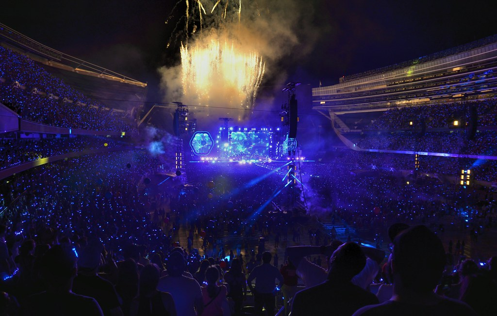

austinjkind@lewisu.edu
My name is Austin Kind and I am from Homer Glen, IL. I live with my mom, dad, and brother. I have two dogs, named Roxy and Teddy. I enjoy hanging out with my friends, listening to music, and watching sports. I currently have a job as a baseball umpire, and as a math tutor for younger kids. I am a freshman at Lewis majoring in computer science. My dad got me into computers when I was a kid, so I decided that I wanted to do more with computers in the future.
My favorite hobby is listening to music. I listen to music everyday. I listen to music when I wake up, while I get ready for school, while I do my homework, while I eat, while I drive, and right before I go to sleep. My favorite genre of music is rock. I like 80s and 90s rock, as well as contemporary rock. My favorite rock bands include Coldplay, The Wallows, Blink-182, The Neighbourhood, Young the Giant, Of Monsters and Men, and The Strokes. I would listen to music 24/7, if that were possible.
For as much as I love music, I have not actually been to too many concerts. My first concert was a Coldplay concert that I went to back in 2016 with my dad. I had never been to a concert before so it was a really awesome and enjoyable experience for me. A few years later, me and my friend Colton went to an Ozzy Osbourne concert. That concert was a lot more wild than the Coldplay concert, but I still had an amazing time. Another concert I went to was to see Of Monsters And Men. I saw them just last year. Their show was phenomenal and was definitely my favorite concert yet. I hope that concerts can start happening again soon so that I can hear some more of my favorite bands in person!
A fun fact about me is that I lived in Norway for about two years when I was younger. My dad was in the military when I was a kid and he was stationed out in Oslo. Therefore, my mom and I moved out to Oslo as soon as I was born. I lived there until I was almost two before we came back to Illinois.